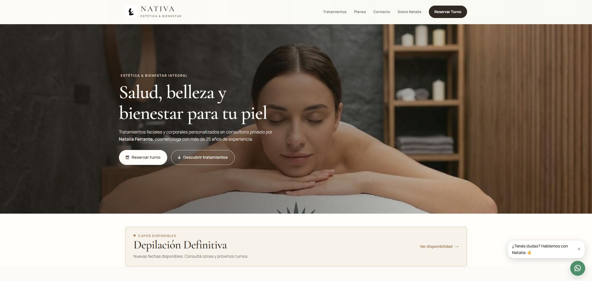

Muchos servicios, fáciles de entender
NATIVA ofrece tratamientos distintos. La web tenía que ayudar a verlos con claridad sin abrumar.
CASO REAL
NATIVA es un espacio de bienestar en Remedios de Escalada. Trabajamos su presencia digital para ordenar servicios, mostrar mejor el espacio y hacer más simple el contacto.
La propuesta ya estaba ahí. El desafío era hacerla más clara y fácil de recorrer antes de llegar a una consulta.
NATIVA ofrece tratamientos distintos. La web tenía que ayudar a verlos con claridad sin abrumar.
Servicios, propuesta, contacto y datos del espacio tenían que quedar ordenados y accesibles.
La prioridad era publicar algo útil y profesional hoy, sin cerrar la puerta a futuras mejoras.
La propuesta se ordenó para entender qué ofrece NATIVA antes de consultar.
La experiencia se planteó para que la información siga siendo clara desde una pantalla chica.
Encontrar información y comunicarse debía ser un recorrido simple.
Una estética serena que acompaña el bienestar y deja el contenido en primer plano.
RESULTADO ENTREGADO
Una base clara, profesional y adaptable para presentar NATIVA hoy y seguir creciendo si el proyecto lo necesita.

Este proyecto muestra algo simple: una web no necesita ser enorme para ser útil.
La claridad importa más que acumular funciones.
Los servicios bien organizados ayudan a entender el negocio.
El celular y el contacto directo deben ser parte central de la experiencia.
Una web puede crecer por etapas según lo que el proyecto necesite.
CONTEXTO DEL PROYECTO
NATIVA es un negocio local de Remedios de Escalada. El trabajo partió de una necesidad concreta: presentar mejor sus servicios y facilitar que una persona encuentre la información antes de consultar.
NODO trabaja desde Zona Sur y también de forma remota.
Si hoy tus servicios, información o consultas están dispersos, podemos ayudarte a ordenarlos en una presencia digital clara.